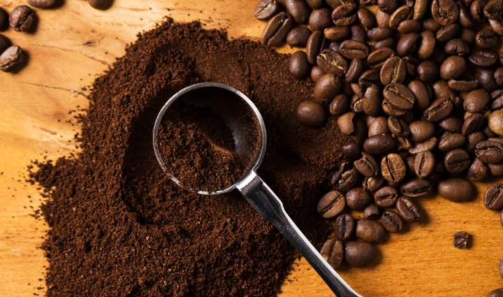

História do Café no Brasil
O café chegou ao Brasil em 1727, entrando pelo estado do Pará e cultivado na cidade de Belém, trazido pelo militar Francisco de Melo Palheta.
Tem início o ciclo do café e a expansão das lavouras cafeeiras no período do Brasil Império. Note que a partir do início do século XIX ele representou a maior fonte de riqueza
do país e o principal produto de exportação.
Nos anos seguintes, o café foi levado para o Maranhão e para o Rio de Janeiro, onde foi cultivado na chácara do Convento dos Frades Barbadinos.
Levado para terras da Serra do Mar, chegou ao vale do Paraíba por volta de 1820. De São Paulo foi para Minas Gerais, Espírito Santo e Paraná.
No Brasil, a abolição gradual da escravatura e a proibição do tráfico de escravos, causaram falta de mão de obra para cafeicultura. A tentativa de comprar escravos no Nordeste,
logo foi proibido por lei.
Em 1845 o Brasil produzia 45% do café mundial. Em 1947 vieram alemães, suíços, portugueses e belgas.
A vinda de imigrantes europeus acentuou-se a partir de 1848, quando ocorreram na Europa várias crises políticas e revoluções.
No sistema de parceria que se instalou inicialmente, o colono tinha direito à metade do valor da produção dos lotes que cultivava, devendo pagar ao fazendeiro as despesas
da viagem e sua instalação.
O fazendeiro dava ao colono as plantações mais improdutivas e eram enganados na hora de repartir a produção. Por esses motivos o sistema de parceria não deu certo.
Muitos colonos abandonaram as plantações.
A partir de 1870, o governo da província de São Paulo passou a subsidiar o transporte de imigrantes europeus para o Brasil. Pouco depois recebeu o apoio do governo imperial
para subvencionar a imigração. Passou a predominar o trabalho assalariado.
Entre 1850 e 1889 entraram no Brasil 871.918 imigrantes, a maioria destinada às fazendas de café de São Paulo. Eram italianos, portugueses, espanhóis, russos, austríacos,
romenos, poloneses, alemães e japoneses.
O cultivo do café em grandes áreas, foi o responsável pela formação de diversos núcleos urbanos no país. O Brasil é um dos maiores produtores e exportadores de café do
mundo. Exporta para os Estados Unidos, Japão e diversos países da Europa.
Os fazendeiro do interior e do oeste de São Paulo, mais prósperos que os da região do Vale do Paraíba, começaram a utilizar em suas propriedades mão de obra de imigrantes europeus,
mais rentáveis que a mão de obra escrava.
Tipos de Café
Basicamente, existem dois tipos de grãos que podem ser usados na produção de café: o Arábica (Coffea arabica) e o Robusta (Coffea canéfora). O primeiro é originário da Etiópia.
Essa planta tem como característica ter 50% menos cafeína, mas o sabor é considerado especial. Por essa razão, é a opção mais indicado quando se fala de bebidas gourmet.
Já os grãos do tipo Robusta dão origem a cafés mais fortes e com gosto mais amargo. Originária da África Ocidental, ela é amplamente cultivada no Brasil e está presente na
composição da maioria dos cafés instantâneos. Teor de cafeína entre 2% e 4,5%, finalização prolongada e sabor levemente achocolatado são algumas das características.
A partir desses dois tipos de grãos, abre-se um leque praticamente infinito de possibilidades. Dentro do Arábica, por exemplo, estão os tipos Bourbon, Kona, Catuaí e Acaiá.
Nesse aspecto, entra em cena ainda a saborização aplicada pelos fabricantes – algo que é bastante perceptível entre as cápsulas de café.
Café em pó
O café em pó para fazer no bule ou na cafeteira é um dos preferidos dos brasileiros, tanto pelo sabor quanto pelo preço. O café Pilão, por exemplo, aparece nas ofertas do
Supermercado Dia por menos de R$10, sendo este um dos 10 melhores cafés em pó do mercado, de acordo com pesquisa realizada pelo instituto Proteste.
O café em pó que compramos no mercado costuma misturar grãos de robusta e arábica e permite a presença de até 450 grãos defeituosos em 300 g do produto. Isso faz
com que os consumidores mais exigentes acabem optando por processos de fabricação mais sofisticados, que tem um cuidado extra na produção, como as categorias Superior,
Gourmet ou Especial.
Café solúvel

O café solúvel surgiu no mercado como uma alternativa prática para quem não tem tempo disponível para preparar a bebida, mas não quer perder a oportunidade de
tomar sua xícara. Em formato em pó ou grânulos, a grande vantagem do café solúvel está no modo de preparo, em que basta adicionar água ou leite quente para ter
a bebida pronta para consumo.
Para fabricar esse tipo de café, as empresas utilizam um longo processo, com etapas que vão desde a seleção do grão, passando pela torra, até a secagem e aglomeração.
Na maioria dos casos, as empresas utilizam os grãos de café Arábica e Robusta/Conilon na produção e o pó solúvel não pode contar com conservantes em sua composição.
Café em cápsulas

Não faz muito tempo que os cafés em cápsulas entraram para o mercado, tendo como empresa pioneira a Nespresso. A proposta é simples: com uma cafeteira específica, o
consumidor compra cápsulas de café conforme seu gosto e cada uma delas corresponde à uma xícara da bebida. Esse tipo de produto permitiu levar versões dos cafés que até
então só encontrávamos nas cafeterias para dentro de casa e a possibilidade de escolher até mesmo os grãos que compõem uma cápsula.
Entre as vantagens desse tipo de café, a praticidade para preparar a bebida e a facilidade de experimentar outros sabores são sempre lembradas por quem é fã da maquininha.
Por outro lado, o custo de cada pacote de cápsulas não é tão atrativo, e pode pesar no orçamento de quem tomar várias xícaras por dia. Nesse caso, talvez a solução seja buscar
outras formas de economizar no mercado para não impactar no cafezinho.